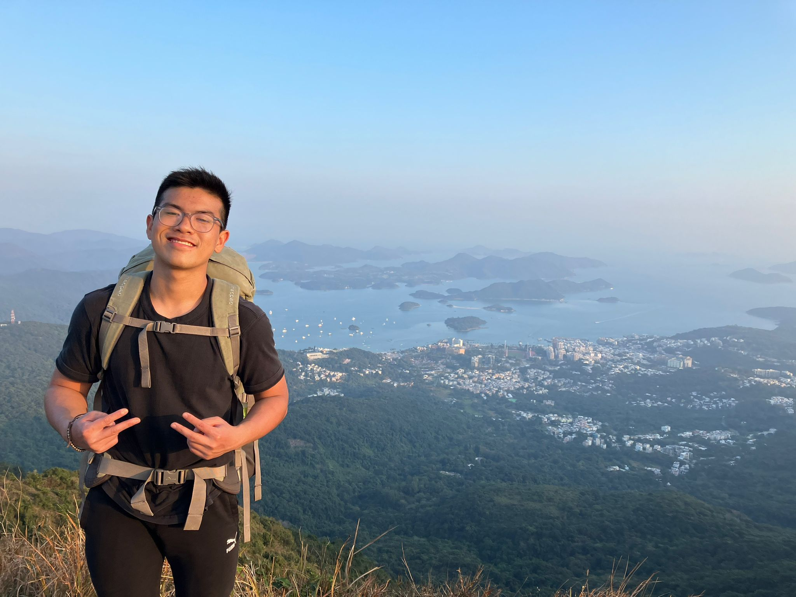

Ba Minh, NGUYEN
Contact

EDUCATION
The Chinese University of Hong Kong (Sep 2022 - Jun 2026)
Bachelor Degree (2nd Year)
- Major: Financial Technology
- Latest GPA: 3.319
- Relevant coursework:
- Data Structure
- Introduction to Computing using Java
- UDEMY Python for Data Science and Machine Learning Bootcamp
- COURSERA IBM Python Project for Data Engineer
- Scholarship: CUHK Admission Scholarship
EXPERIENCE
Education for Vietnamese Youth (08/2022 - 11/2022)
Chief content writer:
- Conducted in-depth research into historical, logical, and educational content to derive meaningful insights
- Produced engaging Vietnamese historical board games for youths aged 8-15 by developing comprehensive gameplay
mechanics, game rules, and written content
Youth for Cybersecurity (08/2022 - 11/2022)
Chief Content Writer:
- Engaged in collating data and conducting research into financial technology, cybersecurity, and work ethics
Trường Ca Kịch Viện (03/2022 - 12/2022)
Event Organizer:
- Organized various events to display traditional Vietnamese art by collaborating with a team, developing display designs, and communicating directly with artists from all regions across Vietnam
- Cooperated with artists to provide support and materials so as to enhance their artwork and performances
PROJECTS
- Utilized Python libraries like Pytube and Requests HTML to scrape YouTube videos and transform them into audio files
- Implemented Python dictionaries such as BeautifulSoup to scrape data from the Ultimate Fighting Championship (UFC) statistics website, as well as collated findings on fighters' information, and cleaned data obtained
- Obtained datasets on salary figures in order to analyze differences between job salaries in the field of data science
LANGUAGES, SKILLS & INTERESTS
Language:
- Vietnamese: Native
- English: Fluent (IELTS 7.5)
IT Skills: Microsoft Office, HTML, CSS, C Programming, C++, Java, SQL, Python, Algorithms, Machine Learning, Data Science, Data Analytics, Data Scrapping
Qualifications/ Certifications:
Interest: Data Science, Data Engineering, Economics, Finance, Jiu-Jitsu